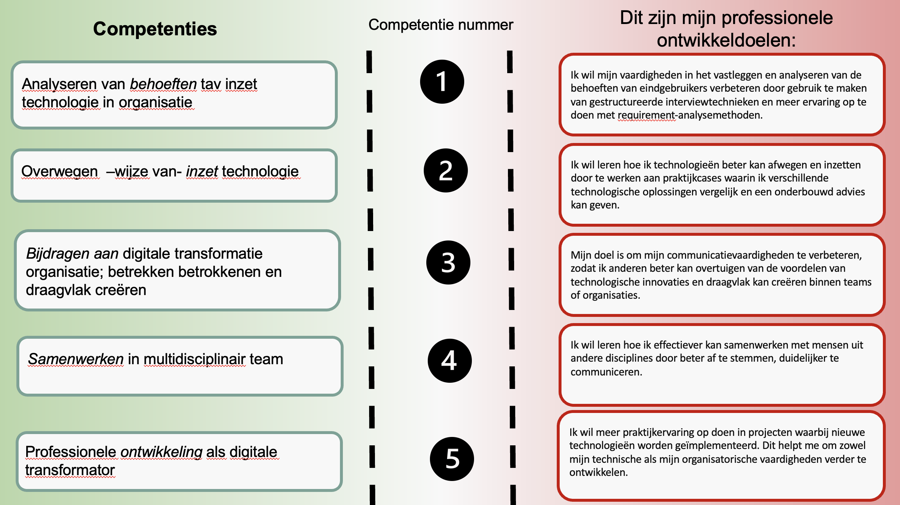

0 meting
Ontwikkeldoel 1: Verbreding van technische kennis
Leerdoel
Ik wilde mijn kennis en vaardigheden op verschillende technologische gebieden uitbreiden—van 3D-printen en productietechnieken tot het werken met API’s en AI-oplossingen—zodat ik in toekomstige projecten sneller kan schakelen en beter kan bijdragen aan innovatieve eindproducten.
Status
Leerdoel behaald
Waarom dit leerdoel belangrijk is
In een wereld die steeds sneller digitaliseert, is een brede technische basis onmisbaar. Het begrijpen van zowel fysieke productiemethoden als digitale data-uitwisseling en kunstmatige intelligentie stelt mij in staat om oplossingen te bedenken die écht bijdragen aan vooruitgang. Door te investeren in deze kennis ben ik beter voorbereid op de diverse uitdagingen die ik tijdens mijn studie en later in mijn carrière zal tegenkomen.
Toelichting
Bij Smart Technology hebben we stap voor stap geleerd hoe je een 3D-model maakt en print. Zo ontwierpen we onder andere een behuizing voor onze IoT-oplossing en hebben we die vervolgens zelf geprint. Door dit proces kreeg ik niet alleen de software onder de knie, maar leerde ik ook over zaken als materiaalkeuze en het juist instellen van de printer. Ik vond het vooral leerzaam om te zien hoe elk detail invloed heeft op het eindresultaat, van het correct slicen van het model tot het nabewerken van het geprinte object. Daarnaast hebben we een bezoek gebracht aan Your Plastic Solutions. Tijdens deze rondleiding werd duidelijk hoe verschillende productietechnieken (zoals 3D-printen, spuitgieten en vacuumvormen) worden ingezet. Ik merkte dat het kiezen van de juiste methode afhangt van de gewenste hoeveelheid, vorm en kwaliteit. Zo is 3D-printen geschikt voor snelle prototyping of kleine series, terwijl spuitgieten juist handig is voor grote productieaantallen. Door deze ervaring kreeg ik een beter beeld van hoe een product van ontwerp tot eindproduct kan gaan en welke stappen daarbij komen kijken. Deze praktijkvoorbeelden helpen me om mijn technische kennis te verbreden. Ik zie nu beter wat er allemaal bij een product komt kijken en welke rol 3D-printen daarin kan spelen. Deze inzichten kan ik toepassen in toekomstige projecten, waar ik hoop te blijven leren en te experimenteren met nieuwe technieken.
Bij het onderdeel Smart Connection heb ik me verder verdiept in hoe data gedeeld en gebruikt kan worden via het web. Hoewel ik al enige ervaring had met het bouwen van websites, bleek er toch veel nieuws te ontdekken. Het toepassen van API-calls is bijvoorbeeld ontzettend handig om systemen met elkaar te laten communiceren. Ik merk dat deze kennis onmisbaar is, omdat steeds meer bedrijven en organisaties afhankelijk zijn van een goede koppeling tussen verschillende diensten. Dankzij Smart Connection heb ik meer inzicht gekregen in hoe ik data-uitwisseling efficiënt kan toepassen en optimaliseren in mijn projecten.
In het project dat we hebben uitgevoerd, heb ik mijn kennis op het gebied van kunstmatige intelligentie aanzienlijk uitgebreid. We hebben niet alleen verschillende AI-modellen onderzocht, maar ook gesproken met experts die ons waardevolle praktijkvoorbeelden gaven. Met die informatie konden we zelf een AI-oplossing ontwikkelen, waarbij we gebruikmaakten van API-calls en samenwerkten met een interne expert bij Mprise. Het was heel leerzaam om te zien hoe we AI konden inzetten om data te verwerken en tot bruikbare inzichten te komen. Door deze hands-on ervaring ben ik ervan overtuigd dat AI in de toekomst nog relevanter zal worden en dat het cruciaal is om mijn kennis hierover te blijven uitbreiden.
Ontwikkeldoel 2: Samenwerking en Communicatie in Projecten
Leerdoel
Ik wilde beter leren samenwerken in projectteams en effectiever communiceren over technische onderwerpen, zodat we als groep een geslaagd resultaat konden neerzetten.
Status
Leerdoel behaald
Waarom dit leerdoel belangrijk is
In veel technologische projecten werk je met verschillende specialisten en stakeholders. Zonder goede communicatie en afstemming is het lastig om op één lijn te blijven en doelen te behalen. Een proactieve houding in het delen van voortgang en inplannen van meetings zorgt ervoor dat iedereen betrokken blijft en het project succesvol kan worden afgerond.
Toelichting
Tijdens mijn opdracht bij Mprise kreeg ik de kans om dit leerdoel in de praktijk te brengen. Samen met mijn projectpartner Arian en het team bij Mprise werkten we aan een concrete opdracht. In het begin had ik moeite met de communicatie; ik merkte dat we achter dreigden te lopen omdat ik niet duidelijk genoeg aangaf welke informatie ik nodig had en waar ik tegenaan liep. Dit kwam ter sprake in een van onze projectmeetings, waarna ik heb besloten dit leerdoel formeel vast te stellen: het verbeteren van mijn communicatie en samenwerking binnen projecten. Ik heb me vervolgens proactief ingezet door meetings te plannen en de voortgang te bewaken. Al snel zagen we een duidelijke verbetering: we maakten een flinke inhaalslag en liepen niet langer achter op schema. Het hielp enorm dat we dit punt hadden besproken in onze ‘pitstop’, waardoor ik gemotiveerd bleef om actief te blijven communiceren. Ook al bestond ons studententeam officieel uit twee personen, de collega’s van Mprise Agriware vormden samen met ons een leerzame omgeving. Dankzij hun feedback en de gezamenlijke focus op heldere afstemming, kan ik nu zeggen dat mijn communicatievaardigheden binnen projectgroepen een stuk beter zijn geworden.
Ontwikkeldoelen
Zelfreflectie
Tijdens de minor Smart Industry heb ik mijn kennis en vaardigheden verder ontwikkeld op het snijvlak van technologie en digitale transformatie. Als student Elektrotechniek ben ik altijd geïnteresseerd geweest in het begrijpen en toepassen van nieuwe technologieën. Deze minor bood mij de kans om praktijkervaring op te doen en inzicht te krijgen in hoe organisaties technologie inzetten om processen te verbeteren en te innoveren.
Analyse van behoeften
Eén van de belangrijkste leerpunten tijdens deze minor was het analyseren van de behoeften van eindgebruikers. In ons project heb ik geleerd hoe ik de juiste vragen stel en hoe ik processen binnen een organisatie kan doorgronden. Hoewel ik hierin vooruitgang heb geboekt, besefte ik dat er nog ruimte is voor verbetering in het gestructureerd vastleggen van deze analyses en het toepassen van methoden zoals interviews en requirement-analyse.
Technologie-evaluatie en toepassing
Een van mijn uitdagingen was het evalueren van technologieën en het bepalen van de beste oplossing voor een specifieke situatie. Door advies in te winnen bij experts en een Proof of Concept (POC) te ontwikkelen, heb ik ervaren hoe belangrijk het is om technologie doelgericht in te zetten. Dit heeft mijn analytische vaardigheden aangescherpt en mijn vertrouwen in het maken van technische keuzes vergroot.
Draagvlak creëren
Tijdens groepsprojecten heb ik ontdekt hoe belangrijk het is om draagvlak te creëren voor technologische veranderingen. Door duidelijke communicatie en betrokkenheid van stakeholders heb ik stappen gezet in het overtuigen van anderen. Toch merkte ik dat dit niet altijd vanzelf ging, en dit blijft een gebied waar ik verder aan wil werken.
Samenwerken in multidisciplinaire teams
De minor bood me de kans om samen te werken met studenten uit verschillende opleidingen. Dit heeft me geholpen mijn communicatie- en samenwerkingsvaardigheden verder te ontwikkelen. Hoewel het soms lastig was om verschillende werkstijlen en perspectieven te combineren, heb ik veel geleerd over hoe je effectief kunt samenwerken in een multidisciplinair team.
Professionele groei als digitale transformator
Deze minor heeft mij niet alleen technische vaardigheden bijgebracht, maar ook inzicht gegeven in mijn rol als toekomstige digitale transformator. Ik heb geleerd hoe ik mijn kennis van Elektrotechniek kan inzetten om organisaties te helpen bij hun digitale transformatie. Dit motiveert me om mezelf verder te ontwikkelen en nieuwe uitdagingen aan te gaan in de industrie.